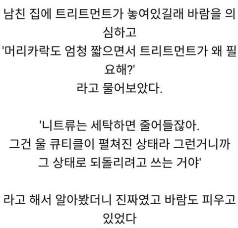

남친 집에 트리트먼트가 있었던 이유
댓글
그리고 바람도 피우고 있지?
후후 불면은 구멍이 커지는 커다란
구멍이 뚫리는 아니냐
오 캡틴 게이 캡틴
)*( → ) ○ (
만나보고 싶은 청년
나 존나 쌩머리라 트리트먼트쓰면 존나존나쌩머리되서 못쓰겠던데
머리결 관리용으로 쓰긴 해야 됨. 외출 안 할 때, 주말이나 저녁에 사용하면 됨
존나쌩머리는 머리결이 좋다는거임!
생머리도 상해 나도 존나 생머리임. 예전엔 세팅이 하도 안 돼서 일부러 상하게 만들었음
나도 일부러 상하게 만드는데 트리트먼트 쓰면 고집이 단비 새끼마냥 돼서 못씀...
매일 안 써도 주말에 외출 안 할 때 정도만 써봐
요즘 파마나 염색도 안해서 머리가 물 맞은 생쥐가 되어가고 있는데..
트리트먼트 - 여자용
사실 진짜로 니트가 암컷이엇고 바람도 피우고 있었다
할건 해야제...
트리트먼트 쓰면 머리가 너무 차분해져서 만지기 힘들던데
외출 안 할 때만 쓰면 되잖아
다운펌 항상 해서 트리트먼트 해주라 해서 하는데
일본식 개그흐름 ㅋㅋㅋㅋㅋ
나는 회사에서 공짜로 줘서 한달에 한두번만 생각날때 씀..
남친은 잃었지만 지식은 얻었군
바람도피우고있었대 씹ㅋㅋㅋㅋㅋㅋㅋㅋㅋㅋㅋㅋㅋㅋㅋㅋㅋㅋㅋㅋㅋㅋㅋㅋㅋㅋ
거짓말을 해야 하니 디테일한 지식을 과하게 알고 있었던 거지
장발이라 트리트먼트 안쓰면 너무 부시시해...
평소 저런 놈이 아닌데 술술 읊어대니 더 잡아냈겠지
기왕 트리트먼트도 산 김에 하나 더 늘린거겠지
예전에 혼자살때 세트로 받아서 트리트먼트도 있었는데 한번도 안쓴 상태로 계속 방치되고 있음
그러니까...니트랑 바람피웠다는거지?
반곱슬에게 트리트먼트는 선택이 아니라 필수
샴푸인줄 알고 잘못삼
저게 설득력이있으려면 트리트먼트 위치가 화장실이면 안됌
세탁기갸 화장실에 있다면?
손세탁하겠지
안됌이라고 쓰면 안 됨
세면대에 트린트먼트 섞은 물 받아놓고 담궈둔다 해결
됌됌이

난 머리 감고 헤어드라이기로 말리면서 스타일링 하는데
앞머리랑 윗머리 부분이 꼬불꼬불 거리면서 안테나마냥 삐져나오는데
그것도 트리트 먼트 꾸준히 하면 좋아져??
트리트먼트랑 컨디셔너(린스)하고 말릴때 뜨바 반 찬바 반으로 말리면 머릿결 유지됨
어...트리트먼트 여자만 쓰는거야? 머리 푸석거려서 3-4일 주기로 했는데
아님 남자가 써도 상관없음
ㅇㅇ 님 이제 푸시임
게티어 문제
난 미용실 원장쌤이 준거라서 있는데
나는 염색해서 한번씩 트리트먼트 안하면 머리가 빗자루처럼 됨 ㅡ.,ㅡ;
목욕할때 꼬추털에 하면 찰랑거릴까 해서 해보면 그냥 매끈한 꼬추털이더라
난 트리트먼트 하고 나면 향도 되게 좋고 찰랑거리는거 기분좋아서 하는 편